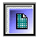
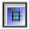
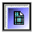
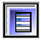
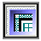
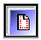
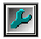

Панель дизайнера
Панель дизайнера используется для управления предпочтениями страницы. Все элементы панели дизайнера
имеют два состояния, свойство компонента, ассоциированное с данной клавишей, меняет свое состояние. Для смены на обратное состояние нажмите на кнопку еще раз. Отжатая кнопка показывает состояние выключено, а нажатая состояние включено.
 Activate Grid Делает сетку страницы видимой/невидимой
 Snap To Grid Привязка объектов к узлам сетки
 Grid On Top Определяет, что сетка находится над компонентами или под ними
 Always Show Band Headers Управляет показом заголовков групп (band)
 Show Rulers Показывает, убирает измерительные линейки
 Show Waste Area Управляет показом пространства между границами страницы и концом настройки границ
 Edit Preferences Вызывает диалог предпочтений